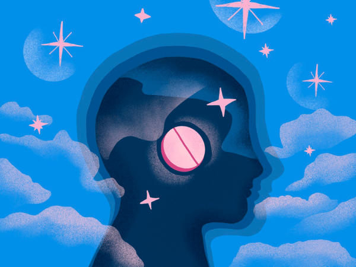

There is no cure for migraines yet. Migraine is a chronic illness caused by abnormal brain biochemistry. It’s a genetic difference, in most cases inherited from your parents — you were born with it and you cannot get rid of it.What is migraine?
Migraine is not just a bad headache; it's a complex neurological disease. At its core, it's a chronic illness caused by abnormal brain biochemistry. Think of it as a genetic difference in how your brain processes sensory information and regulates pain. In most cases, this predisposition is inherited — you are born with a nervous system that is more sensitive and reactive to certain stimuli. Because migraine is deeply rooted in your genetic makeup and brain function, you cannot simply "get rid of it" like a virus or an infection. However, this doesn't mean you are powerless.Migraine is Highly Treatable
While there is no cure, migraine is a treatable disease. The goal of treatment isn't to erase the condition itself, but to manage it effectively. With the right approach, you can significantly reduce the frequency and severity of attacks, shorten their duration, and prevent them from interfering with your daily life. There is a tremendous amount you can do to feel much better. Treatment usually falls into two categories: acute (stopping an attack in progress) and preventive (reducing the number of attacks).How Can I Reduce the Number of Attacks?
Reducing the frequency of migraine attacks involves a two-pronged strategy: building a foundation of healthy habits and identifying your personal triggers. Think of this as building a fortress of protection around your sensitive nervous system.Build a Consistent, Healthy Lifestyle
A regular routine helps stabilize your brain's internal environment, making it less prone to chaos. The following pillars should become your priority:- Prioritize Regular Exercise: Gentle, consistent aerobic exercise like walking, swimming, or cycling can be a powerful preventive tool. Exercise releases endorphins, the body's natural painkillers, and helps reduce stress. Start slowly to avoid triggering an attack from sudden, intense exertion.
- Maintain a Consistent Sleep Schedule: The link between sleep and migraine is strong. Both too little and too much sleep can be triggers. Aim for seven to nine hours of quality sleep per night, and try to go to bed and wake up at the same time every day—even on weekends.
- Don't Skip Meals: Low blood sugar (hypoglycemia) is a common migraine trigger. Eat regular, healthy meals and don't go for long periods without food. Consider keeping healthy snacks on hand to prevent your blood sugar from dropping.
- Stay Hydrated: Dehydration is another major trigger. Make a conscious effort to drink plenty of water throughout the day.
- Master Stress Management: Stress is the most common trigger for migraine. While you can't eliminate all stress from your life, you can change how you respond to it. Techniques like yoga, meditation, deep breathing exercises, and mindfulness can help calm your nervous system and build resilience.
Become a Detective and Identify Your Personal Triggers
No two people with migraine have the exact same set of triggers. What causes an attack for you might be perfectly safe for someone else. This is why identifying your personal triggers is so crucial. It will help you stay away from as many of them as you can. Start keeping a migraine diary. For each attack, make a note of:- The date and time it started.
- The severity of the pain.
- What you ate and drank in the 24 hours before.
- Your sleep quality the night before.
- Your stress levels.
- Any changes in weather or routine.
- For women, the phase of your menstrual cycle.
The Bottom Line
Living with migraine requires a proactive and holistic approach. While you wait for a future cure, you have immense power to manage the condition today. By combining a healthy, consistent lifestyle, a clear understanding of your personal triggers, and a partnership with a good doctor to explore treatment options, you can move from feeling like a victim of your migraines to being the one in control. The goal is not just fewer attacks, but a better quality of life.
References:
- "The Migraine Brain: Your Breakthrough Guide to Fewer Headaches, Better Health". Carolyn Bernstein, M.D., and Elanie McArdle, 2010
- "Managing your Migraine.", Dr. Katy Munro. 2021